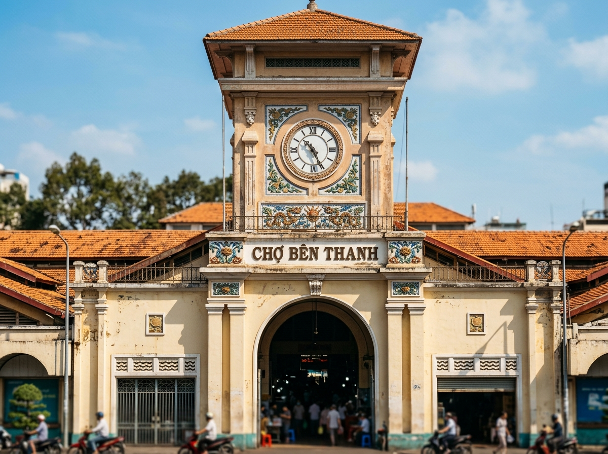

Chợ Bến Thành được thiết kế bởi hãng thầu danh tiếng Brossard et Maupin, khởi công năm 1912. Công trình có diện tích lên tới hơn 13.000m² với kết cấu khung sắt tiền chế chịu lực lớn vươn rộng, không gian bên trong thông thoáng không cần nhiều cột chống, tạo sự thuận lợi tối đa cho hàng ngàn tiểu thương cùng lúc kinh doanh.
Điểm sáng chói trong thiết kế chính là phong cách kiến trúc nhiệt đới bản địa: các tầng mái ngói lợp so le tạo khe thông gió đối lưu tự nhiên, giúp không khí trong chợ luôn mát mẻ bất chấp cái nóng gay gắt quanh năm của miền nhiệt đới Sài Gòn.

Nhắc đến Chợ Bến Thành là nhắc đến tháp đồng hồ cổng Nam. Được ví như "Big Ben của Sài Gòn", tháp đồng hồ hình vuông vươn cao với 3 mặt đồng hồ tròn quay về ba hướng khác nhau.
Cỗ máy đồng hồ cơ khí nguyên bản do hãng Paul Garnier danh tiếng của Pháp sản xuất. Suốt hơn một thế kỷ, tiếng chuông đồng hồ điểm nhịp đã trở thành thanh âm quen thuộc trong ký ức của biết bao thế hệ người dân đô thị.
Chợ Bến Thành được thiết kế theo dạng hình chữ nhật với 4 cổng chính mở ra bốn hướng huyết mạch, mỗi cổng gắn liền với các ngành hàng chuyên biệt:
Cổng biểu tượng với tháp đồng hồ 3 mặt. Khu vực cổng Nam bên trong chuyên bày bán các mặt hàng may mặc, tơ lụa cao cấp, vải vóc, đồ lưu niệm thủ công mỹ nghệ tinh xảo phục vụ du khách trong và ngoài nước.
Cánh cổng của sắc màu và hương vị tươi ngon. Đây là nơi tập trung các sạp hoa quả nhiệt đới tươi mới từ vựa Nam Bộ chuyển về mỗi sớm, hoa tươi khoe sắc và khu vực thực phẩm tươi sống truyền thống.
Thiên đường của các tín đồ bánh kẹo, trà sen, cà phê Robusta/Arabica hạt mộc, mứt sấy ngũ quả và các loại mỹ phẩm hóa mỹ phẩm chăm sóc sắc đẹp phong phú.
Không gian sôi động của các quầy giày dép da thuộc, túi xách thời trang, đồ gốm sứ trang trí và đồ thủ công mỹ nghệ chạm khắc gỗ tinh xảo đậm nét văn hóa Việt Nam.
Năm 1952, trong đợt chỉnh trang diện mạo chợ, nghệ nhân người Việt thuộc Trường Mỹ nghệ thực hành Biên Hòa (Đồng Nai) đã chế tác và gắn 12 bức phù điêu bằng gốm men màu đặc trưng lên các vòm cửa của Chợ Bến Thành.
Các bức phù điêu khắc họa chân thực những sản vật trù phú của vùng đất Nam Bộ: con cá mè vẫy đuôi, nải chuối chín mọng, con bò vàng, chùm sen hồng... Đây là minh chứng tuyệt mỹ cho sự kết hợp giữa kiến trúc phương Tây và tâm hồn mỹ thuật dân gian Nam Bộ.
Sau khi tìm hiểu Lịch sử và Kiến trúc, hãy cùng hòa mình vào nhịp sống sôi động của chợ:
Chuyển Sang Chuyên Đề 2: Nhịp Sống & Văn Hóa →